# 导学
# 操作系统的演进
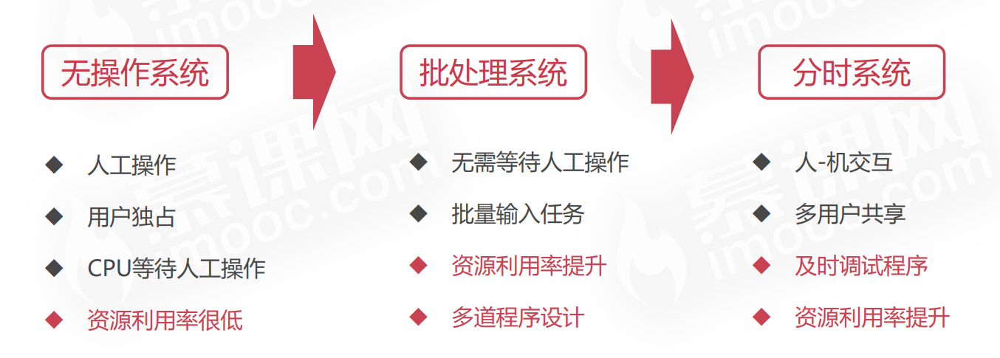
# 多道程序设计
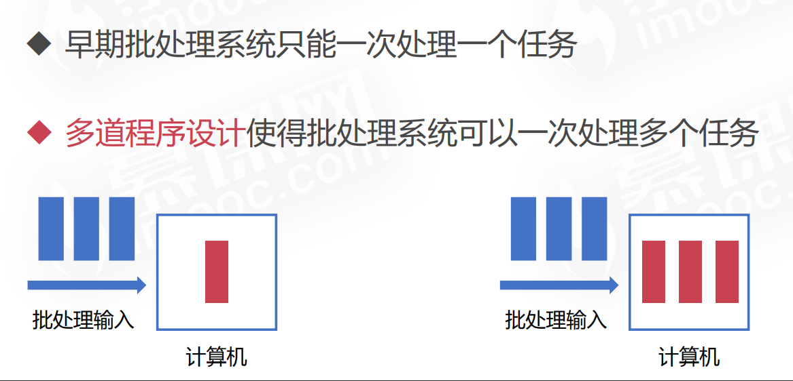
# 什么是操作系统
管理硬件、提供用户交互的软件系统
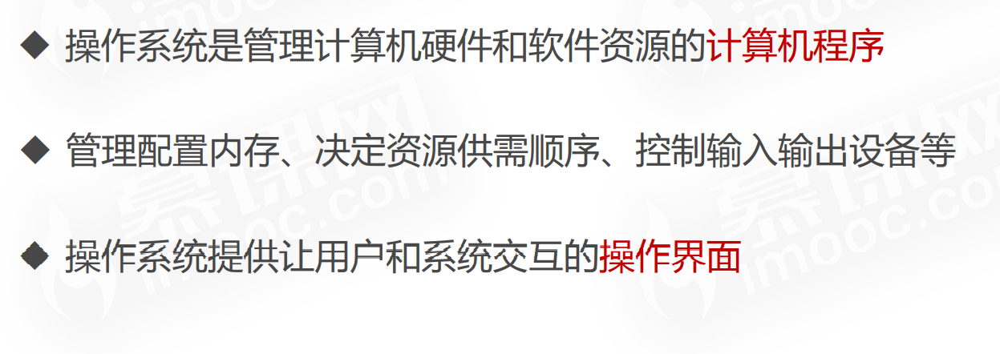
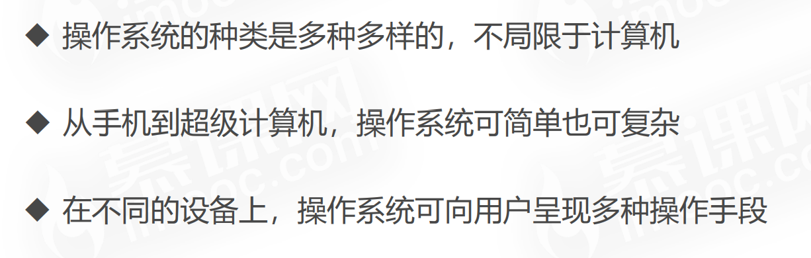
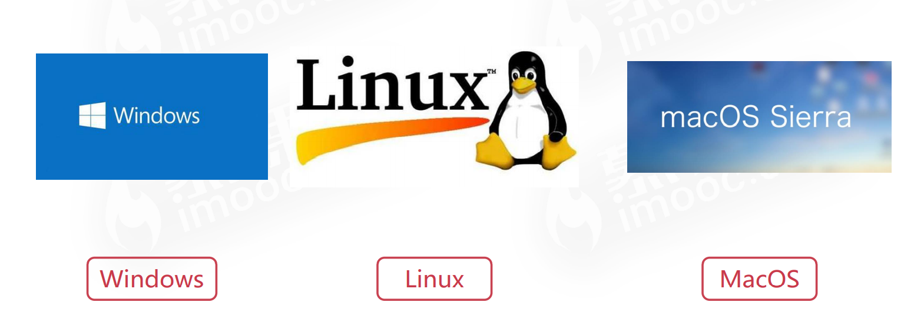
基于 Android 与 Linux 进行优化的操作系统。
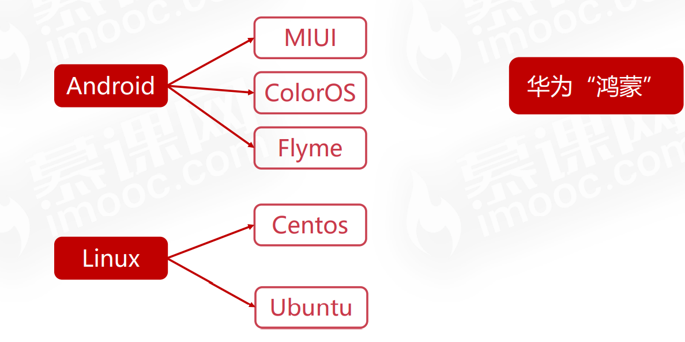
让我们拭目以待的华为的鸿蒙系统
# 为什么需要操作系统
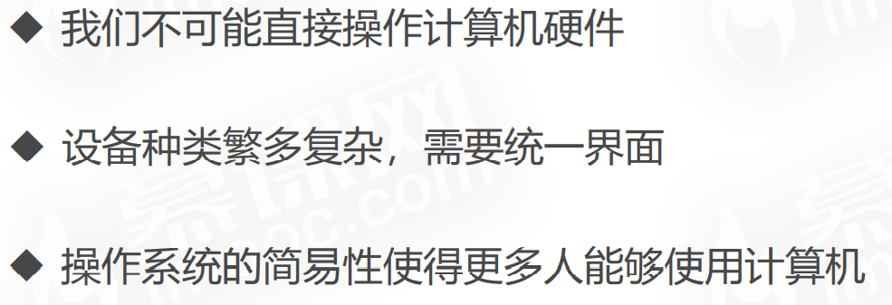
# 操作系统的基本功能
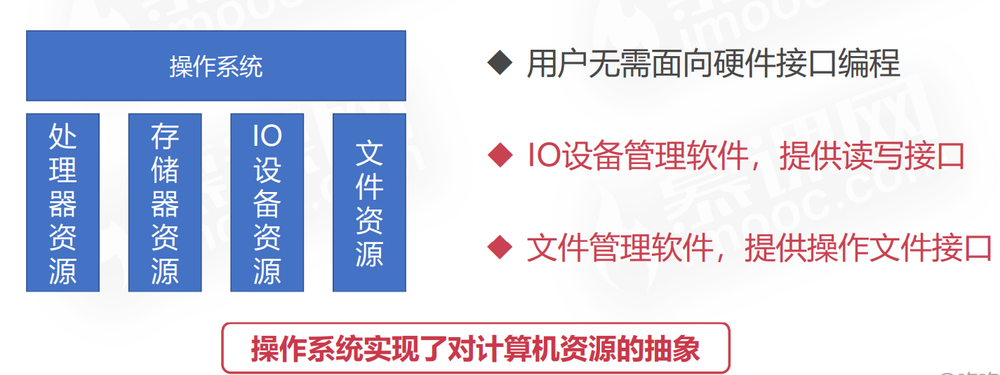
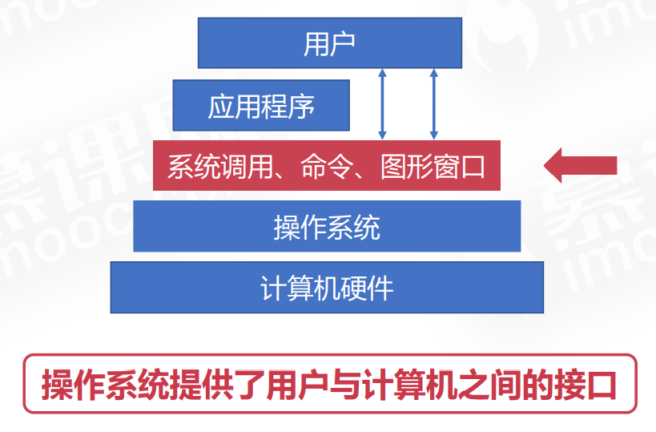
# 操作系统相关概念
# 并发性
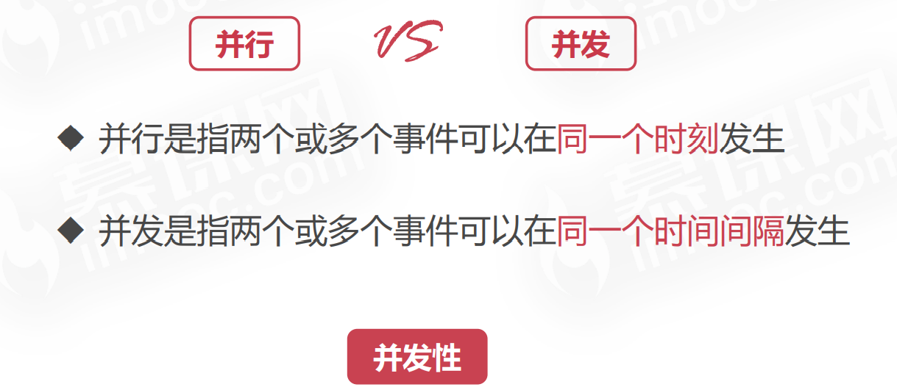
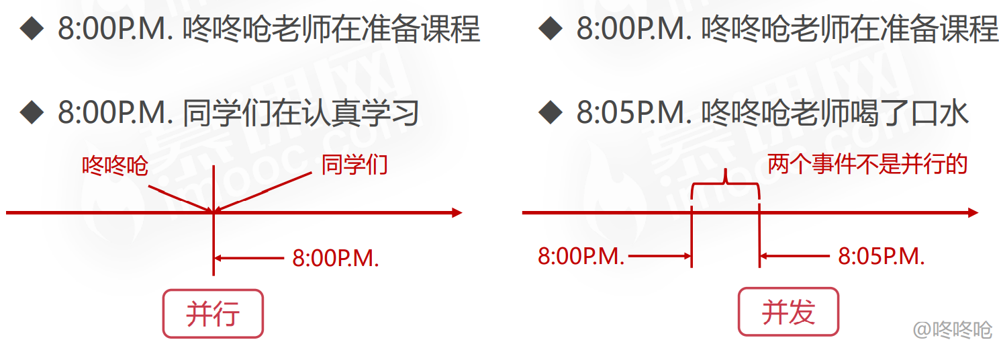
并行与并发在计算机中的体现
单处理器只有并发
双处理器，每一个时刻都是两个程序并行运行的，对于双处理器，我们主要强调的是并行的概念
如果我们强调双处理器里的每一个核的话，主要是强调并发的概念
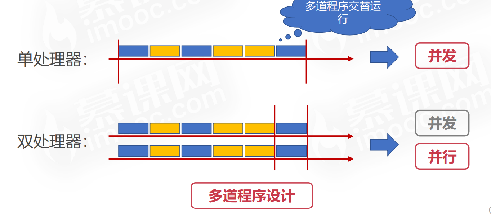
# 共享性
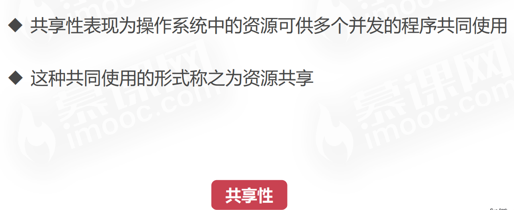
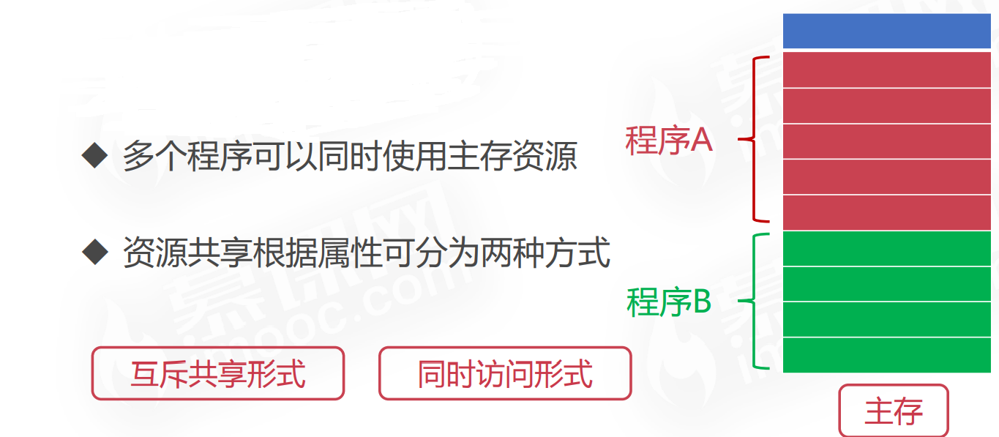
# 虚拟性
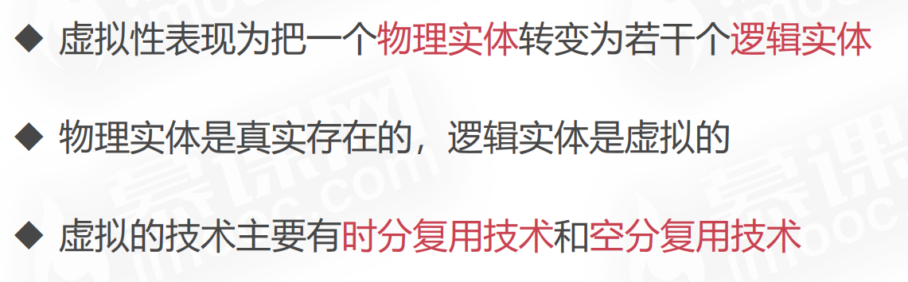
# 异步性

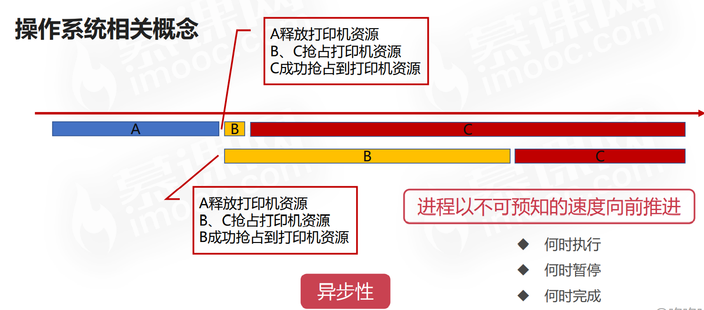
# 关于同步和异步的笔记
1. 同步和异步
同步和异步关注的是消息通信机制
所谓同步，就是在发出一个调用时，没得到结果之前，该调用就不返回。但是一旦调用返回就得到返回值了，调用者主动等待这个调用的结果
所谓异步，就是在发出一个调用时，这个调用就直接返回了，不管返回有没有结果。当一个异步过程调用发出后，被调用者通过状态，通知来通知调用者，或者通过回调函数处理这个调用
2. 阻塞和非阻塞
阻塞和非阻塞关注的是程序在等待调用结果时的状态
阻塞调用是指调用结果返回之前，当前线程会被挂起。调用线程只有在得到结果之后才返回
非阻塞调用是指在不能立即得到结果之前，该调用不会阻塞当前线程
网络上的例子
老张爱喝茶，废话不说，煮开水。
出场人物：老张，水壶两把（普通水壶，简称水壶；会响的水壶，简称响水壶）。
1 老张把水壶放到火上，立等水开。（同步阻塞）；立等就是阻塞了老张去干别的事，老张得一直主动的看着水开没，这就是同步
2 老张把水壶放到火上，去客厅看电视，时不时去厨房看看水开没有。（同步非阻塞）；老张去看电视了，这就是非阻塞了，但是老张还是得关注着水开没，这也就是同步了
3 老张把响水壶放到火上，立等水开。（异步阻塞）；立等就是阻塞了老张去干别的事，但是老张不用时刻关注水开没，因为水开了，响水壶会提醒他，这就是异步了
4 老张把响水壶放到火上，去客厅看电视，水壶响之前不再去看它了，响了再去拿壶。（异步非阻塞）；老张去看电视了，这就是非阻塞了，而且，等水开了，响水壶会提醒他，这就是异步了
所谓同步异步，只是对于水壶而言。普通水壶，同步；响水壶，异步。对应的也就是消息通信机制
虽然都能干活，但响水壶可以在自己完工之后，提示老张水开了。这是普通水壶所不能及的。同步只能让调用者去轮询自己（情况 2 中），造成老张效率的低下。
所谓阻塞非阻塞，仅仅对于老张而言。立等的老张，阻塞；对应的也就是程序等待结果时的状态
看电视的老张，非阻塞。
情况 1 和情况 3 中老张就是阻塞的，媳妇喊他都不知道。虽然 3 中响水壶是异步的，可对于立等的老张没有太大的意义。所以一般异步是配合非阻塞使用的，这样才能发挥异步的效用。